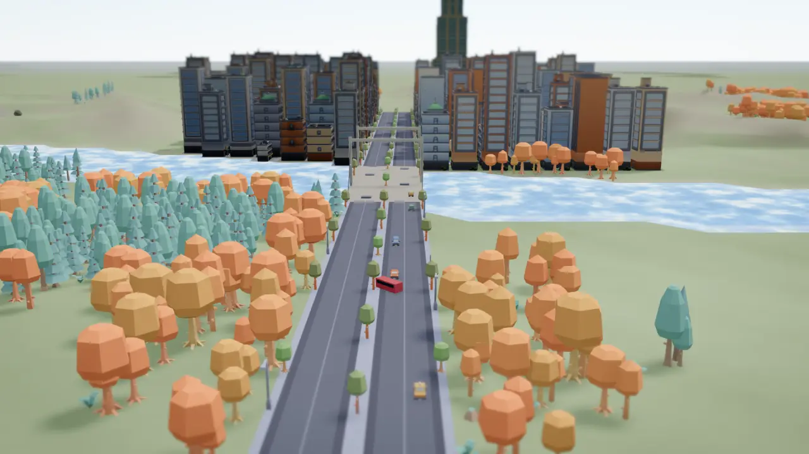
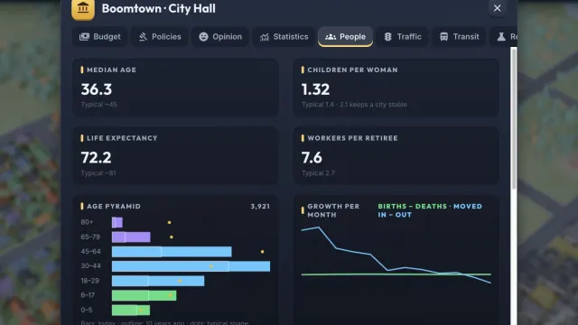
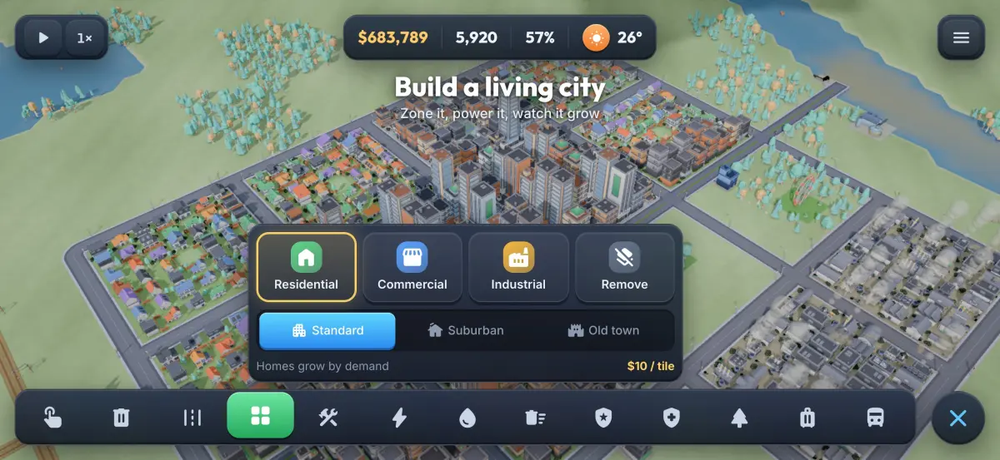
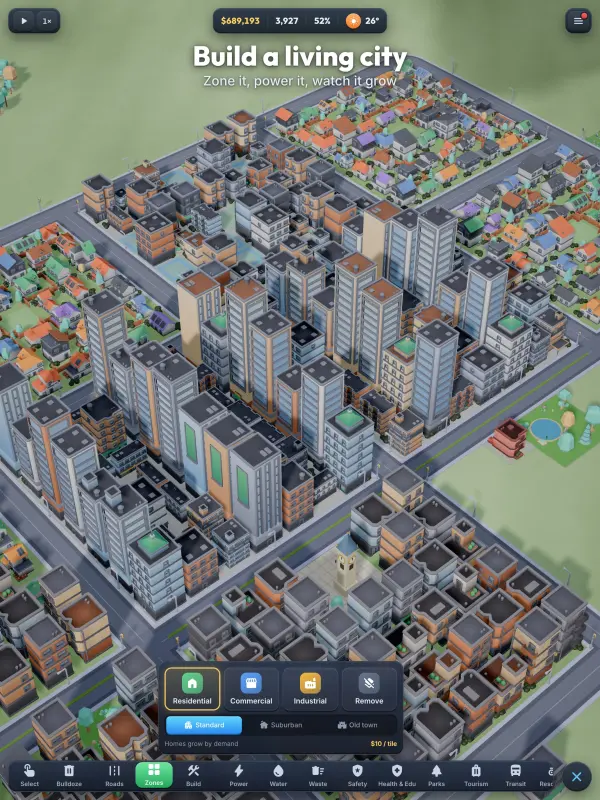
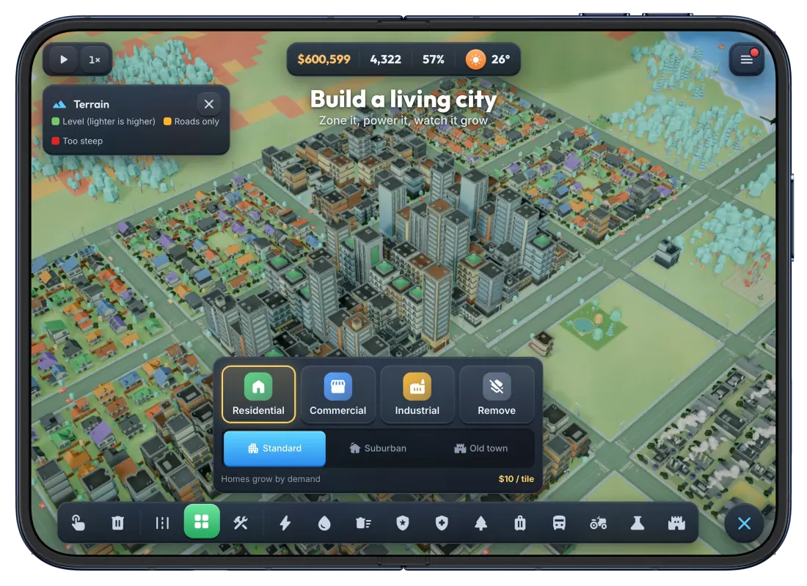

BOOMTOWN Juego de construir ciudades
Construye una ciudad viva
Tu ciudad, tus reglas: zonifica barrios, mantén las luces encendidas en olas de calor y heladas, alimenta a tus habitantes y mira cómo cobra vida el tráfico.

Construye una ciudad viva
Tu ciudad, tus reglas: zonifica barrios, mantén las luces encendidas en olas de calor y heladas, alimenta a tus habitantes y mira cómo cobra vida el tráfico.
Boomtown es un constructor de ciudades relajante pero profundo. Pinta casas, tiendas e industrias, conecta la electricidad y el agua, y mira cómo tus habitantes se mudan, forman familias, van al trabajo y te dicen exactamente lo que piensan.
Zonifica, dale energía y mira cómo crece
La nieve, las olas de calor y las tormentas cambian cómo funciona tu ciudad

Los habitantes nacen, envejecen y transmiten su legado
Cultiva alimentos, vende el excedente, excava mineral
Los mapas de datos revelan tráfico, contaminación y valor del suelo
Monumentos, cascos antiguos y calles peatonales atraen visitantes
Cada coche elige su propia ruta. Los hogares sin coche caminan o usan el transporte público. Pon en marcha líneas de autobús, tranvía y tren, peatonaliza calles y abre un aeropuerto.
Fija impuestos por zona, financia cada departamento, pide préstamos y elige entre 14 políticas.
17 tecnologías, desde tranvías hasta energía nuclear, y maravillas como la Expo Mundial y el Centro Espacial.
Los incendios se propagan de casa en casa, las tormentas dañan edificios y los habitantes descontentos salen a la calle.
Tráfico, contaminación, aguas subterráneas, viento, delincuencia, edad, visitantes y más, con modo para daltónicos.
Ocho rangos de aldea a megaciudad, misiones con tiempo límite, 25 logros y noticias sorpresa.
Coloca, previsualiza, confirma. Mantén pulsado cualquier botón para saber qué hace, deshaz tus últimos movimientos y activa el modo zurdo o una interfaz más grande (tamaño de la UI).
En iPhone y Android se juega en horizontal. El iPad también admite vertical.



iOS 15 o posterior.
Android 7.0 (API 24) o posterior, teléfonos y tabletas.
Horizontal en iPhone y Android. El iPad también admite vertical.
Ninguna. Se juega totalmente sin conexión.
$120,000 para empezar. Mantenimiento ×0,8, incendios con la mitad de probabilidad y sin quiebra.
$60,000 para empezar. Doce meses en números rojos y la ciudad quiebra.
$30,000 para empezar. Mantenimiento ×1,25, incendios 1,5 veces más probables, misma regla de quiebra.
Dinero ilimitado y todos los desbloqueos gratis. Los logros no cuentan.
Elige el tamaño de la ciudad, el terreno, el ritmo de las generaciones y el calendario de cada nueva ciudad.
Aldea, Pueblo, Villa, Ciudad pequeña, Ciudad, Metrópolis, Megalópolis, Megaciudad.
Se conservan en todas tus ciudades. Las ciudades sandbox no cuentan.
12 tipos de objetivos con recompensas en dinero. Caducan, así que elige los que puedas alcanzar.
Además, 5 grandes proyectos, desde la Expo Mundial hasta el Centro Espacial.
Ya disponible en Google Play. Muy pronto en la App Store.
4.99 · compra única · sin anuncios, sin compras dentro de la app